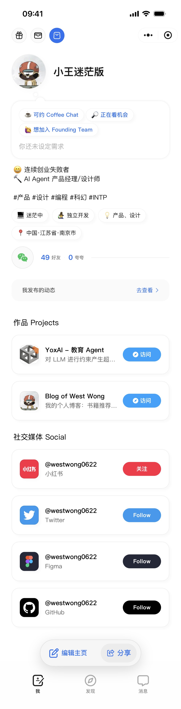

一、GitHub 个人主页
1. 建立 GitHub 主页
要建立 GitHub 个人主页，其实非常简单：
- 新建一个 和你 GitHub 账号同名的仓库
- 仓库名必须完全一致（大小写也一致）
- 在仓库里创建
README.md
例如我的：https://github.com/westwong0622/westwong0622
只要仓库存在，GitHub 就会自动把这个 README 渲染成你的个人主页
2. 借鉴他人的 GitHub 主页
如果你不知道怎么写，可以直接「抄」，模仿是进步的阶梯
几个不错的参考方式：
方式一：直接参考优秀个人主页
- 示例：https://github.com/steipete/steipete
- 下载或复制他的 README，按需改内容即可
- 本质就是 Markdown，没有任何黑魔法
方式二：看更多模板
- GitHub 官方主题库：https://github.com/topics/github-profile-readme
- 能看到各种风格：
- 极简型
- 技术栈型
- 数据统计型
- 个人介绍型
方式三：用 GUI 工具生成
- README 生成器：https://github.com/rahuldkjain/github-profile-readme-generator
- 适合：
- 不想折腾 Markdown
- 想快速生成一个能看的主页
- 生成后再自己微调即可
3. 徽章（Badges）小工具
徽章是 GitHub README 的灵魂之一 😊
3.1 Shields.io 是什么？
- 官网：https://shields.io
- 用来生成 统一、美观、可读性强 的徽章图片
常见展示内容包括：
- 项目构建状态（passing / failing）
- 包版本号
- 代码覆盖率
- 下载次数
- License
- 技术栈
- 贡献者数量
3.2 一个最简单的例子


核心结构拆解一下：
Figma：显示文本F24E1E：背景色（十六进制，去掉 # 号）style：可以使用flat,flat-square,plastic,for-the-badge, `sociallogo：品牌图标logoColor：图标颜色
3.3 去哪里找 logo 和颜色？
推荐两个地方：
- Simple Icons https://simpleicons.org
- 搜索品牌
- 复制官方推荐颜色
- 注意：复制后要把
#删掉
- 直接参考别人 README
- 抄 URL
- 改文字和颜色即可
3.4 看我改完后的示例


4. 查找 emoji
README 里偶尔加一点 emoji 会更有「人味」
另外，自带输入法好烂哦，不太容易找到自己想要的 emoji，你懂的
- 推荐网站：https://emojipedia.org
- 直接搜索关键词复制即可
- 小建议：
- 别过多使用 emoji，不要妨碍阅读
- 小心加多了有 ChatGPT 味哦
btw：emoji 不只 GitHub 能用，所有支持文本的地方基本都能用
二、Bonjour 个人主页
1. 打开方式
- 打开微信搜索 Bonjour 小程序
- 首次使用需要填写一些基础信息
2. 编辑个人主页
在「我的页面」点击 编辑主页，你可以做这些事情：
1. 修改状态
- 比如：
- 想打 hackathon
- 找合作伙伴
- Bonjour 可以根据需求给你推荐人哦
2. 修改个人简介
- 一段纯文本介绍
- 建议：
- 你是谁
- 你在做什么
- 你想连接什么样的人
3. 联系方式
- 可添加：
- 手机号
- 微信二维码图片
- 非常实用，转化率很高
4. 添加标签（Tags）
例如：
- 职业：产品经理、设计师、独立开发者
- 技能：设计、Web 开发、iOS 开发、3D 建模
- 所在城市：川陀、南京
- MBTI：INTP
- 兴趣方向：Si-Fi、古典乐
3. Bento 风格内容区（重点）
下面是自由度最高的部分：
你可以添加：
- 标题、文本
- 网址（项目官网、App Store、公众号）、Side Project！
- 图片（项目图、生活照、自拍都行）
- 职业经历、人生经历
- Connect 区域
- 支持非常多的平台
- 包括：
- 社交媒体
- 开发者平台
- 设计平台
- 图文 / 视频创作平台
- 甚至还能添加捐赠方式（感觉我很需要，😂）
4. 我的 Bonjour 示例
我的 bonjour 链接：#小程序://Bonjour/zt6ZsdRhTL3glir

总结
- GitHub README：偏 技术名片
- Bonjour：偏 社交名片
- 两个一起用，效果非常好